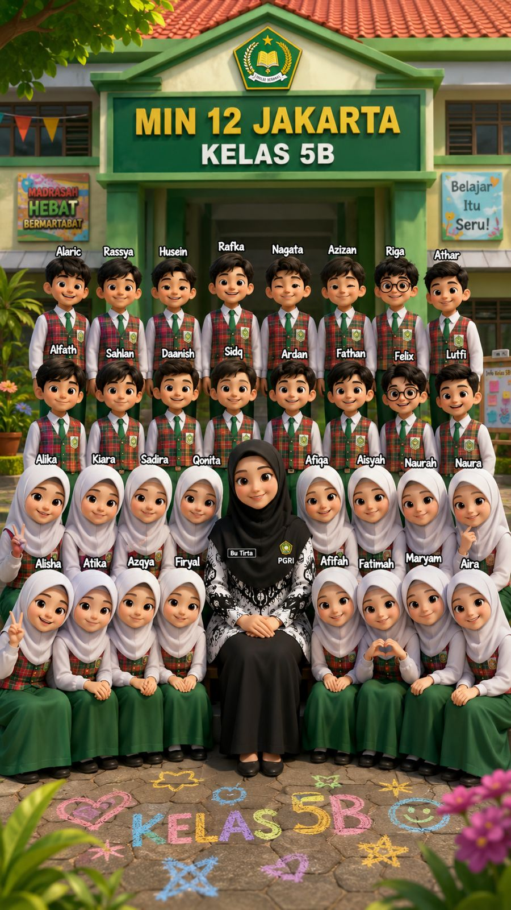

Kebersamaan dan keceriaan keluarga besar siswa-siswi kelas 5B MIN 12 Jakarta.

Keluarga Besar 5B
Generasi Berakhlak & Cerdas
Pemberitahuan Arsip • Angkatan 27
Peringatan Informasi
"Website dibuat angkatan 27 dan sudah tidak dipakai. Terimakasih"
Pemberitahuan ini dimunculkan karena saat ini sudah berbeda tahun pelajaran. Seluruh data, jadwal, dan kepengurusan pada website ini kini disimpan sebagai arsip kenangan.